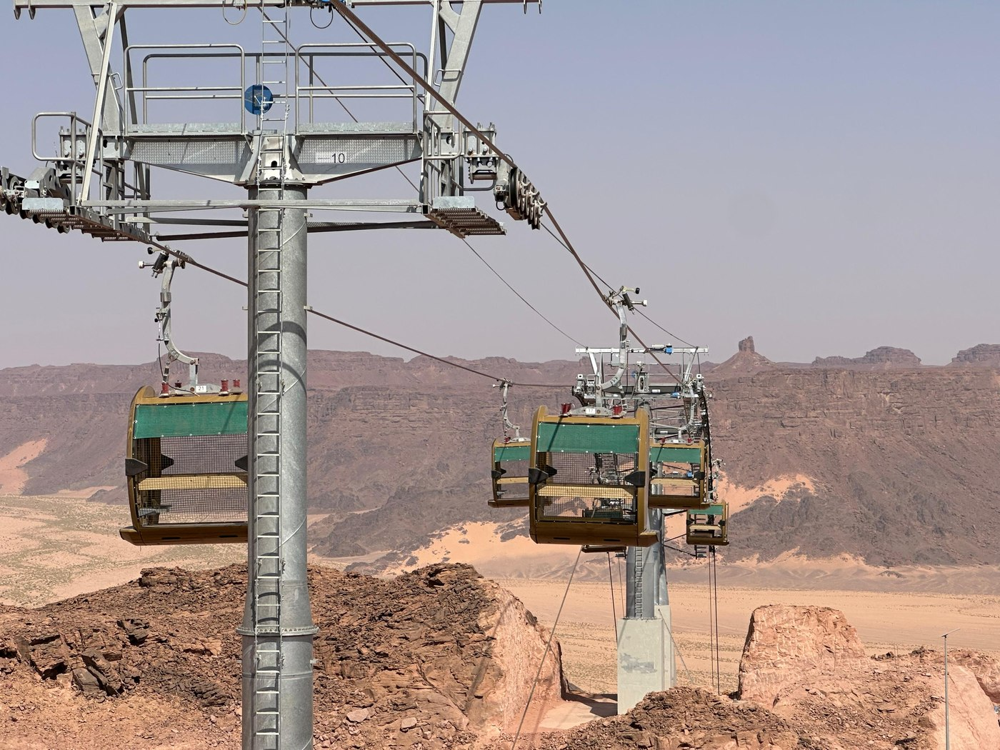

Congestion-Free City Transit
Urban Mobility
Aerial ropeway systems cut across traffic gridlock, linking suburbs to city centres without road infrastructure. AirBridge® technology supports high-frequency urban passenger transit with minimal footprint.
- High-frequency, on-demand urban transit
- Carbon-neutral options
- Integrates with existing transit networks